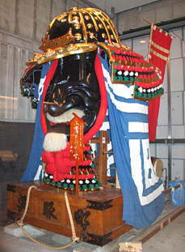
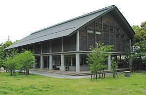
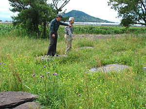
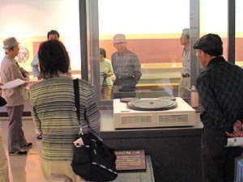
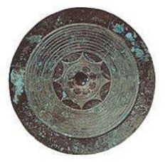
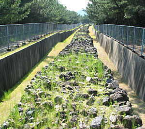

|
五月十四日（水） 最終日
夕べからお腹の調子が悪い。悪いというと下ると想像するが下らないのである。呼子からの売店で日の光をたっぷり浴びた真赤なミニトマト百円也のビタミン補給と、朝五時半、主君「廊下にヨーグルトドリンクがあったからこれ飲んでみたら」と貢物。この起き抜けのビヒズス菌作用のお陰ですっきり。四日間のおみやげが一つ減りほっとする。
雨は上がる。今回の旅の最北西地いろは島を後に帰路に着く。しかし訪問地はまだ一杯。まずは唐津曳山展示場へ。そこへいくまでのバスの中、左手唐津湾に浮かぶ“高島”の宝当神社に寄るかどうか少し揺れ動く。往復一時間で宝くじが当たる？とあらばまだ朝である。行って見ようじゃないかに傾きそうだったけれど、結果は堅実を選択か？素通り直進。
静かに佇む隣の本家唐津神社を守るべく、ど派手な金銀赤青…に彩られた勇猛な戦国武将の兜、鳳凰、獅子など三トンもある曳山が十数台、十一月の宵曳山の時を待って鎮座。その大祭には、いなせな曳き手達が勇壮なお囃子に連れ、ある時は走り、ある時は緩く市中を巡行。町を挙げての祭りになるという。青森のねぶたをふと思わせるボリュームたっぷり力強い屋台であった。
何度も見たり離れたりしている唐津城ともまたわかれ、少し内陸の末盧館へ。卑弥呼のいる邪馬台国に至る「クニ」の一つ、“末盧国”？というからそれなりの所かと思えば、町中信号機付き広い十字路の一角に入り口はあった。中に入れば高床倉庫現代版の立派なコンクリート建築の末盧館と菜畑遺跡の世界。
館内特別展示室でのこと、「久里双水で見つかった盤龍鏡はこの位の大きさですか」と目の前のガラスケースの銅鏡を指せば、A氏、「それよりちょっと小さ目…こっちこっちこの位かな」とニ三歩歩を進め指差す先を見れば、なんと本物の盤龍鏡が特別展示されていたではないか。まさかここに昨日現地に行ってきた久里双水の本物があるとは露知らず、ただ大きさを言っただけだったのに、やはり魚心に水心といおうか、ラッキーは偶然の出来事ではなくプロの導き寄せるもの…。いやあちらから親水性のように近寄ってくるものなのかも知れない。
館内見学の後、縄文晩期に伝えられたという小区画に分けられた日本最古の水田跡を巡る。今はおいしそうな芹田で清らかな水がチョロチョロ、隅の方に竪穴住居復元一棟、崩れ落ちそうな入り口であった。
一面緑色の中、白い可愛い小花をつける木が何本か目を引く。O氏「エゴの木だよ」と教えてくれる。スズランのような小花が枝から一杯つらさがるように咲いていたのと、「エゴの木」というのが印象的で覚えやすかった。
また海岸線に戻り、唐津湾に沿って黒松林の続く虹の松原を走る。静かな波音と白砂青松の風景はまさに国の名勝。かの有名な松露饅頭は、この松の根元に生えるキノコ松露を模したものという。大原本店の看板が過ぎ去る、エッ通過？買いたいのに。後刻福岡空港で購入、ほっ。後で分かったことだけど、横浜高島屋で週イチ販売しているとのことだった。
見通しのよい田園風景の中、バイパスのような道路を一回りして戻り、田んぼの中の支石墓に寄る。エーッこんな細い道大丈夫なの？車がかしぐかと窓から下を見れば、バスは体を小刻みにゆらせながらもっくりもっくり田んぼに突っ込んでいく。わずか数本の立ち木が目印。これまた弥生早・中期の遺跡。支石墓十基と甕棺八基、そこから打・磨製石器等の副葬品が出土したことが全国的に少なく貴重な資料となっている。意味・意義存ぜねば、ただ草むす田んぼの中に大きな上石が見え隠れして存在が確認されるだけ。その石は、近辺でただ一つ小高く見える可也山からのものらしい。一帯が低地であるがゆえ、以後バスからは右窓に左に後方にと可也山の姿が見え隠れ。当時の人々にとってもこの山が一つの目安となっていたらしいというA氏の言に、なるほどと頷く。
ドライバーさん、厭な顔するどころかどこでバックしたのか、こんなぐじゃぐじゃ道をまた何事もなかったように本道に戻る。このように、来たこともなくお試しの機会もなく、スピードあげる車の合間に直角に右折し、細い農道へバスを一発で入れる…。こんな時プロの実力、人柄が試されるのだろう。今までドライバーさんの存在について特別意識せず挨拶ぐらいできてしまったけれど、この運転振りにはさすがと感心させられた。この旅は歴史のプロだけでなく、運転のプロ同乗ゆえの快適な旅であることを実感。そんなことを思いながら、そっと後ろからドライバーさんの顔をのぞめど、「どんなもんだい」というお顔は見られず、両手でハンドルを握って前を向いているいつも通りのオジサンであった。
車は確かに福岡に向かいつつあるものの、まだまだ重要遺跡探訪の寄り道？多し。まず、魏志倭人伝に「世々王有り」と記述されている「伊都国」と推定されている地「伊都歴史資料館」にいく。なんといっても大き過ぎる？円盤のような銅鏡がずらっと並んでいるのが圧巻。平原遺跡で四十もの銅鏡や太刀、勾玉等数百点も出土。中でも直径四十六、五センチの円行花文鏡は世界でも類を見ない大銅鏡で、方格規矩鏡の大量副葬と合わせ,「倭国乱れ女王立つ」と記されている呪術者の最も大きな女王の存在、国家誕生を思わせる重要な資料なのだという。装身具が豊富に出土していること、整然と穿かれている小穴、東側の巨大な柱跡とも考えられる痕跡からも伊都国王墓と比定できるのだそうだ。かの大銅鏡が昭和四十年以後の発掘で見つかった近くの平原遺跡へ。公園に整備中。かって女王の大きな力が存在した地であろうけれど、想像力、学識の乏しい頭には、暑い日差しと夏草が茂るばかり。平原はヘイゲンではなく前原（マエバル）同様ヒラバル。
頭の中は満員御礼でもお腹は空くのである。昨夜のお握りが主役で登場、道路沿いのコンビニで飲物、副食を求めまた車中食。バスはそのまま走り続け松林の先の砂浜海岸で止まる。降りてしばし浜を探せど防塁跡はない。近くの松林先にある、いや福岡にもある……、胃袋に血液が寄せられ頭は緩慢。もうどうでもいい、福岡の方の少しある所を見ればよしとするか…中にはそういう人もいたみたいだったけれど、福岡の方へは今後いく機会はあるかもしれない、けれどここまで防塁跡を見に来ることはおそらく無いだろう、行こう！正統派の声大に圧されてヨッコラショッと下車。これからがまたプロの嗅覚の素晴らしさ。始めは松林の中のコンクリート遊歩道、そのうち両側の松が切られているだけの道で、砂に足を取られながら進む。先頭の人の姿はもうとっくに見えやしない。途中に白に黒の斑のある白豹のような細身背高のワン君とご婦人、綱をつけてなかったところをみるといつも通りの散歩コースか、「お邪魔さま」。その先に十三世紀の防塁跡は残っていた。
ネットが張られ、そこに降りたり触ったりはできないけれど、大小さまざまな石が苔むし、堅くしっかり。百メートル…、いやもっとあったかもしれない、幅三メートルくらいでずっと敷き詰められ、ところどころ土手のような側面の築石、石積みも残っていた。周りはコンクリートで補強され、過ぎし年月を感じさせる無言の証言であった。よき師に導かれてここまで見に来られて本当によかった。怠惰心を払拭して共に引っ張ってきてくれ感謝で一杯。来る時は気付かなかったけれど、耳を澄ませば松林の向うを走る車の音に混じって、打ち寄せるかすかな波音が聞こえる。黙って歩めば、七百五十年程前善良なる戦士達がここに集結し、苦闘、激烈なぶつかり合いをしながら、辛うじて国を守った史実が脳裏をよぎる。今では、ここの松、海、砂、鳥、穏やかな日差し、どこかで聞いたことのある音楽のような松籟と一体となり、怨念をも浄化し、突然の我々の訪問にも、ただ風雪に耐え滾（タギ）のうと変わらぬ素朴な姿で静かに対峙。
ここからはもう一直線福岡へ。高速道を走るうち長かった一日も夕暮れとなる。海岸線から遠景ながらはっきりと金印発掘の志賀島の半島が望めた。天の橋立てのように細長く博多湾に黒く突き出ている。その眼前の車窓には福岡タワーやダイエーフォークスの根拠地福岡ドームの明かり……。この旅のフィナーレにふさわしく、レーザー光線の乱反射のごとく、現代都市の喧騒の中に戻りながら、時空を超えた金印の世界が目の前でホントに交錯するのである。その金印とご対面。福岡市博物館は、横浜市立博物館と違って賑やかな街中にあった。かの有名な国宝「漢倭奴国王」金印に「お初にお目にかかります」のご挨拶。何と小さなこと。しかし小太りで燦然と輝きまわりを威圧、展示も別格待遇。てんこもりの見学地のドン尻、三十分余りでざっと一巡。
車も駆け足で御食事処“ふよう”へ。粋な黒塀見越しの松っぽい外観から中に入れば、朱塗りの中華風、客のいない一角に陣取りほっと一息。体はくたっと腰掛に身を委ねながらも、有意義な旅を反芻してか頭は興奮冷めやらず。鶏肉とカシューナッツピーマン炒め、エビチリソースが美味しかった。それでもう満足なれど豪華版特上握り寿司も加わる。この際、明日の分までお腹に詰め込みたかったのだけれど、なにせ中華でガツガツ食べてしまった消化器はノーサンキュー。そう言いつつもほかの人よりは大食いだった私！
この後、あたふた空港で特産品を二、三買い、最後の団体行動、機上の人となる。羽田に着いたら挨拶もそこそこにマイホームへ。パスネット持参のお陰で時間短縮、発車寸前の三崎口行特急電車に飛び乗り、無事帰宅。門のフェンスを開けるカチッという音に、待ちかねていたのか夜目には狸のような愛犬「ワン」が、クォーンと一声あげ私に突進。体をくねらせちぎれるほどに尻尾を振り歓迎。私が帰って邪心なく無心で喜んでくれたのは彼女だけ。後の者は，犬、猫そのほか生きてるものの世話やふだん負んぶに抱っこが当たり前となっている主婦業代行から解放される安堵感（勿論無事でなによりも秘めて）。夜遅かったこともあり一言二言言葉を交わし、皆すぐそれぞれの部屋に引き上げる。その後はもう私の世界。狭い内風呂の終い湯につかりながら疲れているのにコックリもせず、のびのびと手足を伸ばし、私の人間容量には過ぎたロング照射だったけれど、心地良い刺激と満足感が満ちてくる平成十五年五月十四日の深夜であった。
翌朝早くから、もうふだん通り頭より体が大忙し。されどなんだか気分爽快なのである。未消化物を一杯頭に詰め込んだままなのに足も引きずらない。行くまではほんとに全行程を無事こなせるか不安があったのに、ヤセガマンでなく杖は一度も使わずに済んだ。それどころか、転地療養？で治って帰宅というわけだ。さては、軽度の心身症“おうちのおしごとしたくない病”だったか、“私も飛びたい症候群”に罹っていたのか—、両者当たらずと言えども遠からず。
また越し方をつらつら思うに、長年マスト＝ねばならぬたくさんの現実を抱え,本当の自分を見失ってきた時を経て、その呪縛を解き放ち、自らが欲することに導かれて生きていきたいと思っていたのだけれど、外からではない内からの「こんな自分でいたい」、「こんな自分は厭だ」という、ありのままの私を愛し切れないもう一つの呪縛を自ら嵌めていたのかもしれない。足の怪我も、何のことはないところで何のことはない動作で激痛、歩けなくなってしまったのである。オミ足さんが「あたしはもう駄目！限界！」と叫んでいるのに、アタマさんの方は「あれもしたい」、「これもしたい」と日程表に時間の許す限りを書き込み、予定をこなす日々—。それは確かにマストではなく楽しみ、喜びであった。しかし、体重と気ばかり多いだけで浅学非才の私には無理だったのである。なのに、できないのはどうして？と自分を叱咤激励し続けていたのではないか。外からのマストからは解放されたけれど、己の心に住む第二のマストにいつの間にか結わかれてしまっていた—。
「体の一部分になるとしたら貴方は何になりますか」と聞かれたら、「まず目か口」と答えるでしょう。そして絶対なりたくないないのは「お尻と足」。恩恵をこうむりながら何千という体のパーツに感謝するどころか、有無を言わさず命令屋さんの心という奴に従わせて当たり前、“自分の身と心は支配できる”という傲慢さで生きていたような気がしてきたのです。従って足が痛ければ医者に行って治し、元に戻ればＯＫ．しかし直らない自分は認められないという思考。しかしこの頃はその膝痛と共存もそう悪くはないのではないかと思い始めたのです。諦めて治す努力をしないというわけではない、痛いなら治るよう努力することと同じように、痛いのを受け入れ痛くない暮しを考える、酷使しない、重量減の選択だって５０％あっていいのではないかという思考である。痛さが治らず元に戻らないのは不本意で、五体完璧でなければダメと自らを否定するなら、少々の不都合は数々あれど、これで結構頑張ってる今のワタシを誰が許し、いい子いい子してくれるというのか—。
またその歩けない膝痛も、考えようによってはよかれの神の声かもしれないのである。「あんたはまだこの世で働いてもらいた人だから、ちょっとストップを掛けたのじゃよ。そうでもしなかったら、このまま突っ走り自滅するかもしれんによ。」そうかもしれない。躰の各パーツにも命があり、独立独歩しながらもトータルとして私の個性を形作っている。それぞれの声を聞きながらなるべく心身が遊離せぬよう、優しく生きる現実是認の思いがジュワーット胸一杯に広がり、なんだか泣きたいようなこみ上げるものを感じたのです。
“膝の怪我と旅”は私を一つ大きくしてくれました。ご心配をお掛けし、お世話になった同行の皆様のお陰です。見聞したことの感想とは少し離れ、内面の吐露で少々恥ずかしさを伴いますが、ここまで導いてくれた多くの人に感謝の思いを篭めてここに記すことにしました。尾田さん、西田さんは煽て上手で、もういい加減にしたい私の背をずっと押してくれ、書くエネルギー源となりました。心よりお礼申し上げます。 以 上
|
|
| |
|  |
| ４番曳山 源義経の兜 |
|  |
魏志倭人伝に記載されて
いる末蘆国に因む末蘆館 |
|  |
| 可也山の姿が見え隠れする志登支石墓群 |
|  |
| 伊都歴史資料館で大銅鏡を見る |
|  |
| 日本最大級の銅鏡（直径４６．５ｃｍ） |
|  |
| 今津地区の元寇防塁（復原） |
|